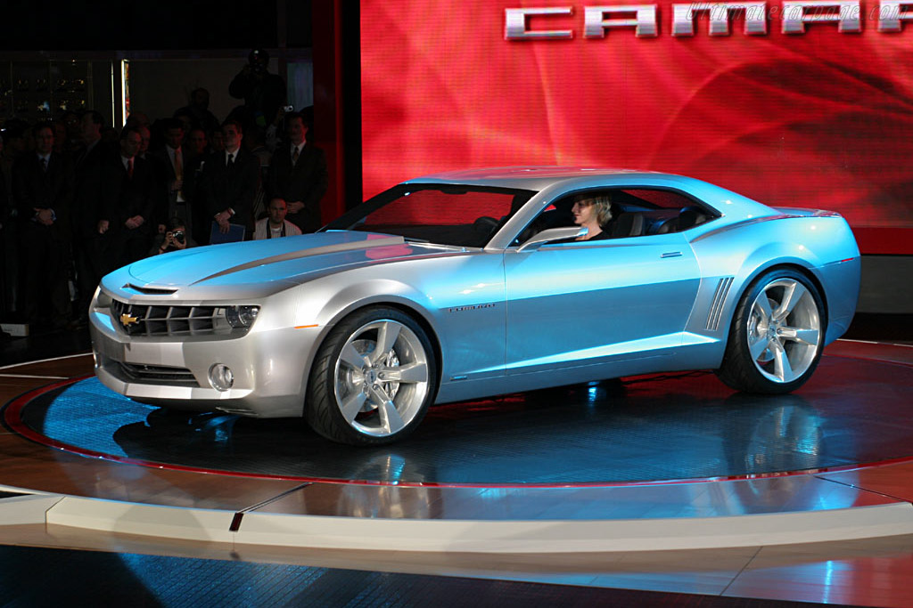

Camaro - 5ª Geração
A quinta geração ficou muito famosa pelo personagem Bumblebee do filme Transformers e na voz da dupla sertaneja Munhoz e Mariano. Seu visual foi inspirado na primeira geração do Camaro e ficou marcado pelas formas agressivas e nem sempre muito práticas. O modelo SS de 2010 vinha equipado com um motor L99 6.2 V8 de 406 cv de potência.